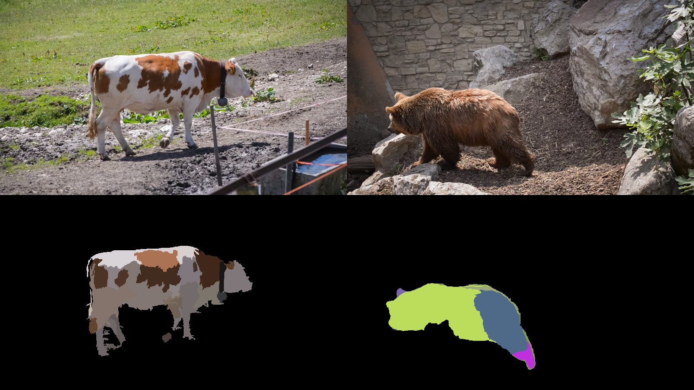
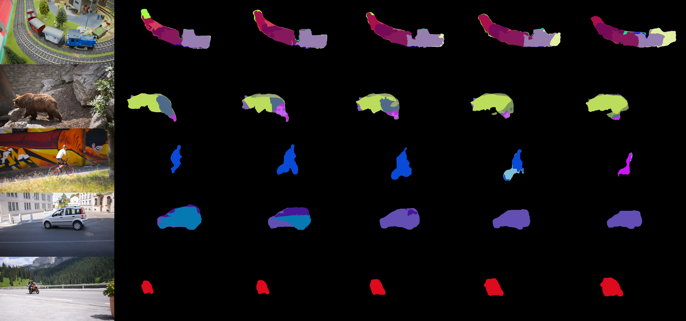

László Kopácsi, Áron Fóthi, Ádám Fodor, Ellák Somfai, András Lőrincz

We estimated the contribution of different factors in segmentation tasks by means of deep neural networks. Results indicated that texture and optical flow have similar power, but they seem not to add up. In turn, we decided to study the ‘Common Fate Principle’ of the 100 years gestaltism suggesting that elements that move together belong together. We developed a simple, fast, and efficient episodic segmentation method that – to some extent – resembles the ‘how system’ of the visual processing: we dropped every piece of information except motion, and started from pure optical flow estimations on 2D videos. For the sake of segmentation, we used a parallel and fast hierarchical supervoxel algorithm. We studied (i) grid topology in space and time, (ii) 2D grid in space and topology dictated by the optical flow in time, and (iii) added deep network based depth estimation from 2D images. We measure performances on episodic foreground-background segmentation task of the Davis benchmark videos. Results are competitive to state-of-the-art segmentation techniques.
High quality examples for Common Fate Principle based segmentation.

Middle row: case where occlusion spoils the result.
Columns in order from left to right: RGB image, supervoxel masks on the 1st, 4th, 8th, 12th and 16th frames.
If you found our research helpful or influential please consider citing:
@INPROCEEDINGS{8851697,
author = {Kopácsi, László and Fóthi, Áron and Fodor, Ádám and Somfai, Ellák and Lőrincz, András},
booktitle = {2019 International Joint Conference on Neural Networks (IJCNN)},
title = {Common Fate Based Episodic Segmentation by Combining Supervoxels with Deep Neural Networks},
year = {2019},
pages = {1-7},
doi = {10.1109/IJCNN.2019.8851697}
}